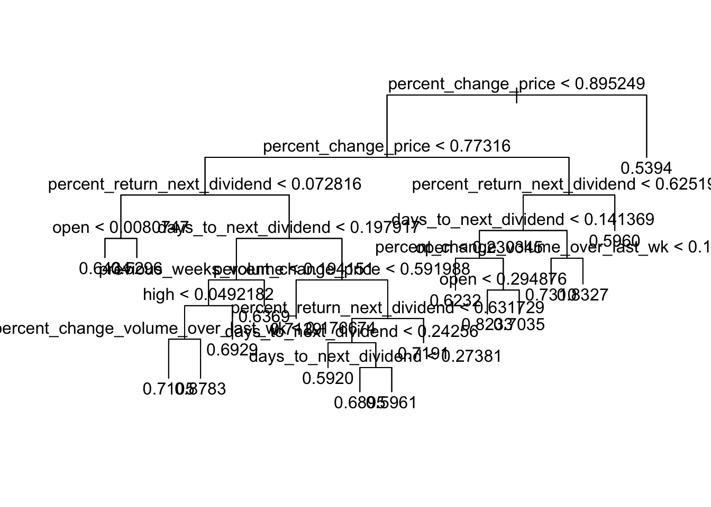

pacman::p_load(MASS, tidyverse, here, skimr, rpart, dplyr, VIM, corrplot, car, quantmod, ggplot2, tree, e1071)
select <- dplyr::selectCase Study 3 Sandbox
Case Study 3 Sandbox
raw_index_data <- read.csv(here('Case Study 3', 'dow_jones_index.data'))
raw_index_names <- read.csv(here('Case Study 3', 'dow_jones_index.names'))str(raw_index_data)'data.frame': 750 obs. of 16 variables:
$ quarter : int 1 1 1 1 1 1 1 1 1 1 ...
$ stock : chr "AA" "AA" "AA" "AA" ...
$ date : chr "1/7/2011" "1/14/2011" "1/21/2011" "1/28/2011" ...
$ open : chr "$15.82" "$16.71" "$16.19" "$15.87" ...
$ high : chr "$16.72" "$16.71" "$16.38" "$16.63" ...
$ low : chr "$15.78" "$15.64" "$15.60" "$15.82" ...
$ close : chr "$16.42" "$15.97" "$15.79" "$16.13" ...
$ volume : int 239655616 242963398 138428495 151379173 154387761 114691279 80023895 132981863 109493077 114332562 ...
$ percent_change_price : num 3.79 -4.43 -2.47 1.64 5.93 ...
$ percent_change_volume_over_last_wk: num NA 1.38 -43.02 9.36 1.99 ...
$ previous_weeks_volume : int NA 239655616 242963398 138428495 151379173 154387761 114691279 80023895 132981863 109493077 ...
$ next_weeks_open : chr "$16.71" "$16.19" "$15.87" "$16.18" ...
$ next_weeks_close : chr "$15.97" "$15.79" "$16.13" "$17.14" ...
$ percent_change_next_weeks_price : num -4.428 -2.471 1.638 5.933 0.231 ...
$ days_to_next_dividend : int 26 19 12 5 97 90 83 76 69 62 ...
$ percent_return_next_dividend : num 0.183 0.188 0.19 0.186 0.175 ...skim(raw_index_data)| Name | raw_index_data |
| Number of rows | 750 |
| Number of columns | 16 |
| _______________________ | |
| Column type frequency: | |
| character | 8 |
| numeric | 8 |
| ________________________ | |
| Group variables | None |
Variable type: character
| skim_variable | n_missing | complete_rate | min | max | empty | n_unique | whitespace |
|---|---|---|---|---|---|---|---|
| stock | 0 | 1 | 1 | 4 | 0 | 30 | 0 |
| date | 0 | 1 | 8 | 9 | 0 | 25 | 0 |
| open | 0 | 1 | 6 | 7 | 0 | 722 | 0 |
| high | 0 | 1 | 6 | 7 | 0 | 713 | 0 |
| low | 0 | 1 | 6 | 7 | 0 | 711 | 0 |
| close | 0 | 1 | 6 | 7 | 0 | 711 | 0 |
| next_weeks_open | 0 | 1 | 6 | 7 | 0 | 720 | 0 |
| next_weeks_close | 0 | 1 | 6 | 7 | 0 | 715 | 0 |
Variable type: numeric
| skim_variable | n_missing | complete_rate | mean | sd | p0 | p25 | p50 | p75 | p100 | hist |
|---|---|---|---|---|---|---|---|---|---|---|
| quarter | 0 | 1.00 | 1.52 | 0.50 | 1.00 | 1.00 | 2.00 | 2.00 | 2.000000e+00 | ▇▁▁▁▇ |
| volume | 0 | 1.00 | 117547801.41 | 158438089.36 | 9718851.00 | 30866243.25 | 53060885.00 | 132721823.75 | 1.453439e+09 | ▇▁▁▁▁ |
| percent_change_price | 0 | 1.00 | 0.05 | 2.52 | -15.42 | -1.29 | 0.00 | 1.65 | 9.880000e+00 | ▁▁▆▇▁ |
| percent_change_volume_over_last_wk | 30 | 0.96 | 5.59 | 40.54 | -61.43 | -19.80 | 0.51 | 21.80 | 3.274100e+02 | ▇▃▁▁▁ |
| previous_weeks_volume | 30 | 0.96 | 117387644.83 | 159232228.00 | 9718851.00 | 30678320.00 | 52945558.00 | 133322975.25 | 1.453439e+09 | ▇▁▁▁▁ |
| percent_change_next_weeks_price | 0 | 1.00 | 0.24 | 2.68 | -15.42 | -1.22 | 0.10 | 1.85 | 9.880000e+00 | ▁▁▆▇▁ |
| days_to_next_dividend | 0 | 1.00 | 52.53 | 46.34 | 0.00 | 24.00 | 47.00 | 69.00 | 3.360000e+02 | ▇▃▁▁▁ |
| percent_return_next_dividend | 0 | 1.00 | 0.69 | 0.31 | 0.07 | 0.53 | 0.68 | 0.85 | 1.560000e+00 | ▃▇▇▂▂ |
anyNA(raw_index_data)[1] TRUE#It appears we have missing values, We will need to address this in some of our next steps but first we’ll divide the data into train and test
missing_values <- colSums(is.na(raw_index_data))
missing_values quarter stock
0 0
date open
0 0
high low
0 0
close volume
0 0
percent_change_price percent_change_volume_over_last_wk
0 30
previous_weeks_volume next_weeks_open
30 0
next_weeks_close percent_change_next_weeks_price
0 0
days_to_next_dividend percent_return_next_dividend
0 0 #Splitting data into training (Q1) and testing (Q2)
train_data <- subset(raw_index_data, quarter == 1) # Training data (Q1: Jan-Mar)
test_data <- subset(raw_index_data, quarter == 2) # Testing data (Q2: Apr-Jun)#Running correlation check among the numeric variables
cor_matrix <- cor(train_data[, sapply(train_data, is.numeric)], use = "complete.obs")Warning in cor(train_data[, sapply(train_data, is.numeric)], use =
"complete.obs"): the standard deviation is zerocor_matrix quarter volume percent_change_price
quarter 1 NA NA
volume NA 1.00000000 -0.221694454
percent_change_price NA -0.22169445 1.000000000
percent_change_volume_over_last_wk NA 0.19768437 -0.358896850
previous_weeks_volume NA 0.86432993 -0.045258948
percent_change_next_weeks_price NA -0.13167362 0.010374354
days_to_next_dividend NA -0.06414402 0.035086236
percent_return_next_dividend NA -0.27603768 -0.005173395
percent_change_volume_over_last_wk
quarter NA
volume 0.19768437
percent_change_price -0.35889685
percent_change_volume_over_last_wk 1.00000000
previous_weeks_volume -0.14112278
percent_change_next_weeks_price 0.04455945
days_to_next_dividend -0.01836656
percent_return_next_dividend -0.01906340
previous_weeks_volume
quarter NA
volume 0.86432993
percent_change_price -0.04525895
percent_change_volume_over_last_wk -0.14112278
previous_weeks_volume 1.00000000
percent_change_next_weeks_price -0.15477083
days_to_next_dividend -0.06300760
percent_return_next_dividend -0.27870205
percent_change_next_weeks_price
quarter NA
volume -0.131673616
percent_change_price 0.010374354
percent_change_volume_over_last_wk 0.044559445
previous_weeks_volume -0.154770828
percent_change_next_weeks_price 1.000000000
days_to_next_dividend -0.005275484
percent_return_next_dividend 0.109565562
days_to_next_dividend
quarter NA
volume -0.064144021
percent_change_price 0.035086236
percent_change_volume_over_last_wk -0.018366565
previous_weeks_volume -0.063007605
percent_change_next_weeks_price -0.005275484
days_to_next_dividend 1.000000000
percent_return_next_dividend 0.100206077
percent_return_next_dividend
quarter NA
volume -0.276037679
percent_change_price -0.005173395
percent_change_volume_over_last_wk -0.019063402
previous_weeks_volume -0.278702047
percent_change_next_weeks_price 0.109565562
days_to_next_dividend 0.100206077
percent_return_next_dividend 1.000000000#There appears to be correlation between ‘volume’ and keep ‘previous_weeks_volume’-these two had >.8 (high correlation). Which one would be important to keep for predicting our target variable [percent_change_next_weeks_price]?
#I’ve decided to parse out the data variables I believe will be most useful moving forward
selected_vars <- c('date', 'stock', "percent_change_next_weeks_price", "percent_change_price",
"percent_change_volume_over_last_wk", "previous_weeks_volume",
"days_to_next_dividend", "percent_return_next_dividend",
"open", "high", "low", "close")
train_data_filtered <- train_data[,selected_vars]
test_data_filtered <- test_data[,selected_vars]No issue with the variables selected except no date or stock variable?
#Convert necessary columns to numeric
train_data_filtered <- train_data_filtered %>%
mutate(across(c(open, high, low, close), ~ as.numeric(gsub("[$,]", "", .)))) # Clean and convert
test_data_filtered <- test_data_filtered %>%
mutate(across(c(open, high, low, close), ~ as.numeric(gsub("[$,]", "", .)))) #impute missing values using KNN in order to maintain integrity of any data patterns
# KNN imputation on the training data
train_data_imputed <- kNN(train_data_filtered, variable = c("percent_change_volume_over_last_wk", "previous_weeks_volume"),
k = 5, imp_var = F) # Adjust k (number of neighbors) as necessary
# Should return 'FALSE' if no missing values
anyNA(train_data_imputed)[1] FALSEVariables were selected before but here you went back to your original un-selected training dataset. Adjusted to go with the datset with variable selections. I’m pretty neutral on imputing the data, my only concern here is that we may need to explain reasoning for choosing KNN imputation, and check assumptions for using this method. My original gut check with this is too assume the same volume change, so percent_change_over_last_week would be zero for imputed values, and previous_weeks_volume would equal volume.
#Apply scaling in prep for modeling
normalize_min_max <- function(x) {
(x - min(x, na.rm = TRUE)) / (max(x, na.rm = TRUE) - min(x, na.rm = TRUE))
}
train_data_scaled <- train_data_imputed %>%
mutate(across(where(is.numeric), normalize_min_max))
test_data_scaled <- test_data_filtered %>%
mutate(across(where(is.numeric), normalize_min_max))
anyNA(train_data_imputed)[1] FALSE#Chage Date variable to true date
train_data_scaled <- train_data_scaled %>%
mutate(date = parse_date_time(date, '%m/%d/%Y'))
test_data_scaled <- test_data_scaled %>%
mutate(date = parse_date_time(date, '%m/%d/%Y'))
anyNA(train_data_scaled)[1] FALSE#Create lagged Variables on scaled data
train_data_scaled %>%
arrange(date) %>%
mutate(
percent_change_price_lag1 = lag(percent_change_price)
) %>% head() date stock percent_change_next_weeks_price percent_change_price
1 2011-01-07 AA 0.4770919 0.8338412
2 2011-01-07 AXP 0.8705239 0.7754923
3 2011-01-07 BA 0.7098931 0.8811481
4 2011-01-07 BAC 1.0000000 0.7945878
5 2011-01-07 CAT 0.7065060 0.6393762
6 2011-01-07 CSCO 0.7252142 0.7796038
percent_change_volume_over_last_wk previous_weeks_volume
1 0.08825424 0.08475325
2 0.06807195 0.02822541
3 0.08777741 0.01771123
4 0.15240536 0.67354126
5 0.23260218 0.01243852
6 0.03435266 0.20297610
days_to_next_dividend percent_return_next_dividend open high
1 0.07738095 0.078157861 0.014022729 0.016286645
2 0.26488095 0.227004526 0.196650495 0.204429967
3 0.09821429 0.360186281 0.348508008 0.364039088
4 0.16071429 0.003070525 0.000930418 0.003061889
5 0.03273810 0.269484482 0.536120157 0.525016287
6 0.24107143 0.147166604 0.044792982 0.044169381
low close percent_change_price_lag1
1 0.016415321 0.020330033 NA
2 0.198785533 0.204752475 0.8338412
3 0.351528093 0.369900990 0.7754923
4 0.003202989 0.006006601 0.8811481
5 0.527025224 0.530627063 0.7945878
6 0.047110637 0.050363036 0.6393762anyNA(train_data_scaled)[1] FALSEPrevious method to lag variables does not account for the stock itself. So lag value when ordered by date will pull the values for same date across different stocks.
#Create lagged variables on scaled data version 2
#Need to make train/test data without lags for decision tree
train_data_scaled_dt <- train_data_scaled %>%
group_by(stock) %>%
arrange(date)
test_data_scaled_dt <- test_data_scaled %>%
group_by(stock) %>%
arrange(date)
train_data_scaled <- train_data_scaled %>%
group_by(stock) %>%
arrange(date) %>%
mutate(
percent_change_price_lag1 = lag(percent_change_price, n = 1)
) %>% ungroup()
test_data_scaled <- test_data_scaled %>%
group_by(stock) %>%
arrange(date) %>%
mutate(
percent_change_price_lag1 = lag(percent_change_price, n = 1)
) %>% ungroup()
anyNA(train_data_scaled_dt)[1] FALSEanyNA(test_data_scaled_dt)[1] FALSEGroup by should solve earlier issue
#Plotting the lagged variables to visualize correlation
ggplot(train_data_scaled, aes(x = percent_change_price_lag1, y = percent_change_price)) +
geom_point(alpha = 0.6) +
geom_smooth(method = "lm", color = "blue", se = FALSE) +
labs(
title = "Lagged Variable Plot: Percentage Change in Price (t) vs (t-1)",
x = "Percentage Change in Price (t-1)",
y = "Percentage Change in Price (t)"
) +
theme_minimal()`geom_smooth()` using formula = 'y ~ x'Warning: Removed 30 rows containing non-finite outside the scale range
(`stat_smooth()`).Warning: Removed 30 rows containing missing values or values outside the scale range
(`geom_point()`).
library(dplyr)
library(tree)
# Initialize list to store model fits for each stock
tree_fit_list <- list()
performance_metrics <- list()
# Loop through each unique stock and fit a decision tree model
for (i in unique(train_data_scaled_dt$stock)) {
set.seed(123)
# Filter data for the current stock and remove the 'stock' column
stock_data <- dplyr::filter(train_data_scaled_dt, stock == i) %>%
select(-stock)
# Fit decision tree for the current stock
tree_fit <- tree(percent_change_next_weeks_price ~ ., data = stock_data)
# Save the tree model in the list
tree_fit_list[[i]] <- tree_fit
# Plot the tree for the current stock
plot(tree_fit, main = paste("Decision Tree for Stock:", i))
text(tree_fit, pretty = 0)
# Prepare test data for the current stock and remove 'stock' column
test_data_stock <- dplyr::filter(test_data_scaled_dt, stock == i) %>%
select(-stock)
# Get predictions on the test data for the current stock
dt_preds <- predict(tree_fit, newdata = test_data_stock)
# Calculate performance metrics
mse_dt <- mean((test_data_stock$percent_change_next_weeks_price - dt_preds)^2)
mae_dt <- mean(abs(test_data_stock$percent_change_next_weeks_price - dt_preds))
me_dt <- mean(test_data_stock$percent_change_next_weeks_price - dt_preds)
mape_dt <- mean(abs(test_data_stock$percent_change_next_weeks_price - dt_preds) * 100 / test_data_stock$percent_change_next_weeks_price)
# Store metrics in a data frame
performance_metrics[[i]] <- data.frame(stock = i,
mse = mse_dt,
mae = mae_dt,
me = me_dt,
mape = mape_dt)
}Adding missing grouping variables: `stock`Warning in tree(percent_change_next_weeks_price ~ ., data = stock_data): NAs
introduced by coercionAdding missing grouping variables: `stock`Warning in pred1.tree(object, tree.matrix(newdata)): NAs introduced by coercionAdding missing grouping variables: `stock`Warning in tree(percent_change_next_weeks_price ~ ., data = stock_data): NAs
introduced by coercionAdding missing grouping variables: `stock`Warning in pred1.tree(object, tree.matrix(newdata)): NAs introduced by coercionAdding missing grouping variables: `stock`Warning in tree(percent_change_next_weeks_price ~ ., data = stock_data): NAs
introduced by coercionAdding missing grouping variables: `stock`Warning in pred1.tree(object, tree.matrix(newdata)): NAs introduced by coercionAdding missing grouping variables: `stock`Warning in tree(percent_change_next_weeks_price ~ ., data = stock_data): NAs
introduced by coercion
Adding missing grouping variables: `stock`Warning in pred1.tree(object, tree.matrix(newdata)): NAs introduced by coercionAdding missing grouping variables: `stock`Warning in tree(percent_change_next_weeks_price ~ ., data = stock_data): NAs
introduced by coercionAdding missing grouping variables: `stock`Warning in pred1.tree(object, tree.matrix(newdata)): NAs introduced by coercionAdding missing grouping variables: `stock`Warning in tree(percent_change_next_weeks_price ~ ., data = stock_data): NAs
introduced by coercionAdding missing grouping variables: `stock`Warning in pred1.tree(object, tree.matrix(newdata)): NAs introduced by coercionAdding missing grouping variables: `stock`Warning in tree(percent_change_next_weeks_price ~ ., data = stock_data): NAs
introduced by coercionAdding missing grouping variables: `stock`Warning in pred1.tree(object, tree.matrix(newdata)): NAs introduced by coercionAdding missing grouping variables: `stock`Warning in tree(percent_change_next_weeks_price ~ ., data = stock_data): NAs
introduced by coercionAdding missing grouping variables: `stock`Warning in pred1.tree(object, tree.matrix(newdata)): NAs introduced by coercionAdding missing grouping variables: `stock`Warning in tree(percent_change_next_weeks_price ~ ., data = stock_data): NAs
introduced by coercionAdding missing grouping variables: `stock`Warning in pred1.tree(object, tree.matrix(newdata)): NAs introduced by coercionAdding missing grouping variables: `stock`Warning in tree(percent_change_next_weeks_price ~ ., data = stock_data): NAs
introduced by coercionAdding missing grouping variables: `stock`Warning in pred1.tree(object, tree.matrix(newdata)): NAs introduced by coercionAdding missing grouping variables: `stock`Warning in tree(percent_change_next_weeks_price ~ ., data = stock_data): NAs
introduced by coercionAdding missing grouping variables: `stock`Warning in pred1.tree(object, tree.matrix(newdata)): NAs introduced by coercionAdding missing grouping variables: `stock`Warning in tree(percent_change_next_weeks_price ~ ., data = stock_data): NAs
introduced by coercionAdding missing grouping variables: `stock`Warning in pred1.tree(object, tree.matrix(newdata)): NAs introduced by coercionAdding missing grouping variables: `stock`Warning in tree(percent_change_next_weeks_price ~ ., data = stock_data): NAs
introduced by coercionAdding missing grouping variables: `stock`Warning in pred1.tree(object, tree.matrix(newdata)): NAs introduced by coercionAdding missing grouping variables: `stock`Warning in tree(percent_change_next_weeks_price ~ ., data = stock_data): NAs
introduced by coercionAdding missing grouping variables: `stock`Warning in pred1.tree(object, tree.matrix(newdata)): NAs introduced by coercionAdding missing grouping variables: `stock`Warning in tree(percent_change_next_weeks_price ~ ., data = stock_data): NAs
introduced by coercionAdding missing grouping variables: `stock`Warning in pred1.tree(object, tree.matrix(newdata)): NAs introduced by coercionAdding missing grouping variables: `stock`Warning in tree(percent_change_next_weeks_price ~ ., data = stock_data): NAs
introduced by coercionAdding missing grouping variables: `stock`Warning in pred1.tree(object, tree.matrix(newdata)): NAs introduced by coercionAdding missing grouping variables: `stock`Warning in tree(percent_change_next_weeks_price ~ ., data = stock_data): NAs
introduced by coercion
Adding missing grouping variables: `stock`Warning in pred1.tree(object, tree.matrix(newdata)): NAs introduced by coercionAdding missing grouping variables: `stock`Warning in tree(percent_change_next_weeks_price ~ ., data = stock_data): NAs
introduced by coercionAdding missing grouping variables: `stock`Warning in pred1.tree(object, tree.matrix(newdata)): NAs introduced by coercionAdding missing grouping variables: `stock`Warning in tree(percent_change_next_weeks_price ~ ., data = stock_data): NAs
introduced by coercionAdding missing grouping variables: `stock`Warning in pred1.tree(object, tree.matrix(newdata)): NAs introduced by coercionAdding missing grouping variables: `stock`Warning in tree(percent_change_next_weeks_price ~ ., data = stock_data): NAs
introduced by coercion
Adding missing grouping variables: `stock`Warning in pred1.tree(object, tree.matrix(newdata)): NAs introduced by coercionAdding missing grouping variables: `stock`Warning in tree(percent_change_next_weeks_price ~ ., data = stock_data): NAs
introduced by coercionAdding missing grouping variables: `stock`Warning in pred1.tree(object, tree.matrix(newdata)): NAs introduced by coercionAdding missing grouping variables: `stock`Warning in tree(percent_change_next_weeks_price ~ ., data = stock_data): NAs
introduced by coercionAdding missing grouping variables: `stock`Warning in pred1.tree(object, tree.matrix(newdata)): NAs introduced by coercionAdding missing grouping variables: `stock`Warning in tree(percent_change_next_weeks_price ~ ., data = stock_data): NAs
introduced by coercionAdding missing grouping variables: `stock`Warning in pred1.tree(object, tree.matrix(newdata)): NAs introduced by coercionAdding missing grouping variables: `stock`Warning in tree(percent_change_next_weeks_price ~ ., data = stock_data): NAs
introduced by coercionAdding missing grouping variables: `stock`Warning in pred1.tree(object, tree.matrix(newdata)): NAs introduced by coercionAdding missing grouping variables: `stock`Warning in tree(percent_change_next_weeks_price ~ ., data = stock_data): NAs
introduced by coercionAdding missing grouping variables: `stock`Warning in pred1.tree(object, tree.matrix(newdata)): NAs introduced by coercionAdding missing grouping variables: `stock`Warning in tree(percent_change_next_weeks_price ~ ., data = stock_data): NAs
introduced by coercionAdding missing grouping variables: `stock`Warning in pred1.tree(object, tree.matrix(newdata)): NAs introduced by coercionAdding missing grouping variables: `stock`Warning in tree(percent_change_next_weeks_price ~ ., data = stock_data): NAs
introduced by coercionAdding missing grouping variables: `stock`Warning in pred1.tree(object, tree.matrix(newdata)): NAs introduced by coercionAdding missing grouping variables: `stock`Warning in tree(percent_change_next_weeks_price ~ ., data = stock_data): NAs
introduced by coercionAdding missing grouping variables: `stock`Warning in pred1.tree(object, tree.matrix(newdata)): NAs introduced by coercionAdding missing grouping variables: `stock`Warning in tree(percent_change_next_weeks_price ~ ., data = stock_data): NAs
introduced by coercionAdding missing grouping variables: `stock`Warning in pred1.tree(object, tree.matrix(newdata)): NAs introduced by coercionAdding missing grouping variables: `stock`Warning in tree(percent_change_next_weeks_price ~ ., data = stock_data): NAs
introduced by coercionAdding missing grouping variables: `stock`Warning in pred1.tree(object, tree.matrix(newdata)): NAs introduced by coercion# Combine all performance metrics into one data frame
all_metrics <- do.call(rbind, performance_metrics)
print(all_metrics) stock mse mae me mape
AA AA 0.05322252 0.19382502 -0.09133227 77.81166
AXP AXP 0.02167581 0.11133703 -0.01823302 22.52892
BA BA 0.03244267 0.15913068 -0.12441372 37.06722
BAC BAC 0.03448501 0.15849657 -0.14042345 43.34520
CAT CAT 0.11940476 0.29789309 -0.27226954 83.77118
CSCO CSCO 0.05017155 0.18194744 -0.13508179 49.60234
CVX CVX 0.09246819 0.27263657 -0.26501356 69.96839
DD DD 0.06020446 0.20930325 -0.16968914 52.05475
DIS DIS 0.08694596 0.26367334 -0.24071936 66.86428
GE GE 0.03079635 0.15192388 -0.11578933 36.02393
HD HD 0.01974368 0.11545377 -0.11475989 26.58410
HPQ HPQ 0.07077518 0.21218267 -0.17635176 Inf
IBM IBM 0.02894203 0.15357094 -0.13319106 30.24130
INTC INTC 0.04180318 0.17686950 -0.03705417 32.84053
JNJ JNJ 0.02821279 0.14801135 -0.11931267 29.43891
JPM JPM 0.06676470 0.22518887 -0.22225660 56.11664
KRFT KRFT 0.01107153 0.08707076 -0.05697901 16.73778
KO KO 0.02819114 0.15790526 -0.14422128 32.15918
MCD MCD 0.03020121 0.16243984 -0.14084828 30.81803
MMM MMM 0.05995034 0.22449299 -0.21682464 47.58330
MRK MRK 0.01306311 0.09335757 -0.01735007 17.20444
MSFT MSFT 0.03119268 0.13754498 -0.09166007 32.14892
PFE PFE 0.07965402 0.26067289 -0.26067289 56.58037
PG PG 0.03071934 0.14760085 -0.14760085 31.50668
T T 0.03399641 0.16812800 -0.16812800 33.96744
TRV TRV 0.02861440 0.15114180 -0.14159107 33.67949
UTX UTX 0.02880765 0.15544986 -0.08750087 32.21357
VZ VZ 0.03192770 0.16039333 -0.14359909 36.00146
WMT WMT 0.03257089 0.15752213 -0.15752213 32.70360
XOM XOM 0.06465517 0.21269752 -0.18717201 55.56766#Now applying data subset variables to a regression tree, our target variable is [percent_change_next_weeks_price] so we’re going to use this regression tree to assess our features importance (which ones are most predictive?)
#wrapper outside of tree model/use for loop == stock name/store rmse/mape into frame
set.seed(123)
treefit1 <- tree(percent_change_next_weeks_price ~ ., data = train_data_scaled_dt)Warning in tree(percent_change_next_weeks_price ~ ., data =
train_data_scaled_dt): NAs introduced by coercionsummary(treefit1)
Regression tree:
tree(formula = percent_change_next_weeks_price ~ ., data = train_data_scaled_dt)
Variables actually used in tree construction:
[1] "percent_change_price" "percent_return_next_dividend"
[3] "open" "days_to_next_dividend"
[5] "previous_weeks_volume" "high"
[7] "percent_change_volume_over_last_wk"
Number of terminal nodes: 18
Residual mean deviance: 0.008537 = 2.92 / 342
Distribution of residuals:
Min. 1st Qu. Median Mean 3rd Qu. Max.
-0.539400 -0.053140 0.003299 0.000000 0.052890 0.264300 plot(treefit1)
text(treefit1)
# If needed, pruning can be performed by specifying the "best" argument
cv.treefit1 <- cv.tree(treefit1)Warning in tree(model = m[rand != i, , drop = FALSE]): NAs introduced by
coercionWarning in pred1.tree(tree, tree.matrix(nd)): NAs introduced by coercionWarning in tree(model = m[rand != i, , drop = FALSE]): NAs introduced by
coercionWarning in pred1.tree(tree, tree.matrix(nd)): NAs introduced by coercionWarning in tree(model = m[rand != i, , drop = FALSE]): NAs introduced by
coercionWarning in pred1.tree(tree, tree.matrix(nd)): NAs introduced by coercionWarning in tree(model = m[rand != i, , drop = FALSE]): NAs introduced by
coercionWarning in pred1.tree(tree, tree.matrix(nd)): NAs introduced by coercionWarning in tree(model = m[rand != i, , drop = FALSE]): NAs introduced by
coercionWarning in pred1.tree(tree, tree.matrix(nd)): NAs introduced by coercionWarning in tree(model = m[rand != i, , drop = FALSE]): NAs introduced by
coercionWarning in pred1.tree(tree, tree.matrix(nd)): NAs introduced by coercionWarning in tree(model = m[rand != i, , drop = FALSE]): NAs introduced by
coercionWarning in pred1.tree(tree, tree.matrix(nd)): NAs introduced by coercionWarning in tree(model = m[rand != i, , drop = FALSE]): NAs introduced by
coercionWarning in pred1.tree(tree, tree.matrix(nd)): NAs introduced by coercionWarning in tree(model = m[rand != i, , drop = FALSE]): NAs introduced by
coercionWarning in pred1.tree(tree, tree.matrix(nd)): NAs introduced by coercionWarning in tree(model = m[rand != i, , drop = FALSE]): NAs introduced by
coercionWarning in pred1.tree(tree, tree.matrix(nd)): NAs introduced by coercionbest_size <- cv.treefit1$size[which.min(cv.treefit1$dev)]
prune.treefit1 <- prune.tree(treefit1, best = best_size)
summary(prune.treefit1) Length Class Mode
frame 5 data.frame list
where 360 -none- numeric
terms 3 terms call
call 3 -none- call
y 360 -none- numeric
weights 360 -none- numericprint(best_size)[1] 1# Get predictions on the test data
dtpreds <- predict(treefit1, newdata = test_data_scaled_dt)Warning in pred1.tree(object, tree.matrix(newdata)): NAs introduced by coerciontestpreds <- data.frame(date = test_data_scaled_dt$date,
stock = test_data_scaled_dt$stock,
response = test_data_scaled_dt$percent_change_next_weeks_price,
dt = dtpreds)
mse_dt = mean((testpreds$response - testpreds$dt)^2)
mae_dt = mean(abs(testpreds$response - testpreds$dt))
me_dt = mean(testpreds$response - testpreds$dt)
mape_dt = mean(abs(testpreds$response - testpreds$dt)*100/testpreds$response)
testperfs <- data.frame(dt = c(mse_dt, mae_dt, me_dt, mape_dt)
) %>% t()
colnames(testperfs) <- c('mse', 'mae', 'me', 'mape')
print('')[1] ""print(testperfs) mse mae me mape
dt 0.04696285 0.1865256 -0.1627293 Inf#this looks nuts, not sure what to change to make it better
#gonna try pruning, also using Dr. Roy methods for creating tree
after pruning, best size given is 1, which likely means decision tree won’t work out well anyway. but opting for no pruning for preds, we can always change this
Mape will always be Inf because of zero values for response. Probably don’t even need to include it, but i have it anyway in case we need to talk about why we don’t have it.
Linear model
lmfit1 <- step(lm(percent_change_next_weeks_price ~ . - percent_change_price_lag1, data = na.omit(train_data_scaled)), method = 'both')Start: AIC=-1476.33
percent_change_next_weeks_price ~ (date + stock + percent_change_price +
percent_change_volume_over_last_wk + previous_weeks_volume +
days_to_next_dividend + percent_return_next_dividend + open +
high + low + close + percent_change_price_lag1) - percent_change_price_lag1
Df Sum of Sq RSS AIC
- stock 29 0.52702 3.4804 -1480.1
- date 1 0.00000 2.9534 -1478.3
- previous_weeks_volume 1 0.00104 2.9544 -1478.2
- close 1 0.00141 2.9548 -1478.2
- percent_change_volume_over_last_wk 1 0.00504 2.9584 -1477.8
- low 1 0.00743 2.9608 -1477.5
- percent_change_price 1 0.01436 2.9677 -1476.7
- percent_return_next_dividend 1 0.01771 2.9711 -1476.3
<none> 2.9534 -1476.3
- high 1 0.02980 2.9832 -1475.0
- open 1 0.03125 2.9846 -1474.8
- days_to_next_dividend 1 0.04279 2.9962 -1473.6
Step: AIC=-1480.14
percent_change_next_weeks_price ~ date + percent_change_price +
percent_change_volume_over_last_wk + previous_weeks_volume +
days_to_next_dividend + percent_return_next_dividend + open +
high + low + close
Df Sum of Sq RSS AIC
- close 1 0.000270 3.4807 -1482.1
- days_to_next_dividend 1 0.001016 3.4814 -1482.0
- percent_change_volume_over_last_wk 1 0.005272 3.4857 -1481.6
- date 1 0.008586 3.4890 -1481.3
- percent_change_price 1 0.009021 3.4894 -1481.3
- low 1 0.014210 3.4946 -1480.8
- previous_weeks_volume 1 0.015808 3.4962 -1480.7
<none> 3.4804 -1480.1
- open 1 0.023558 3.5039 -1479.9
- high 1 0.049490 3.5299 -1477.5
- percent_return_next_dividend 1 0.053589 3.5340 -1477.1
Step: AIC=-1482.12
percent_change_next_weeks_price ~ date + percent_change_price +
percent_change_volume_over_last_wk + previous_weeks_volume +
days_to_next_dividend + percent_return_next_dividend + open +
high + low
Df Sum of Sq RSS AIC
- days_to_next_dividend 1 0.001025 3.4817 -1484.0
- percent_change_volume_over_last_wk 1 0.005458 3.4861 -1483.6
- date 1 0.008370 3.4890 -1483.3
- percent_change_price 1 0.011180 3.4918 -1483.1
- previous_weeks_volume 1 0.015845 3.4965 -1482.6
- low 1 0.017976 3.4986 -1482.4
<none> 3.4807 -1482.1
- open 1 0.023333 3.5040 -1481.9
- percent_return_next_dividend 1 0.053340 3.5340 -1479.1
- high 1 0.075192 3.5559 -1477.1
Step: AIC=-1484.02
percent_change_next_weeks_price ~ date + percent_change_price +
percent_change_volume_over_last_wk + previous_weeks_volume +
percent_return_next_dividend + open + high + low
Df Sum of Sq RSS AIC
- percent_change_volume_over_last_wk 1 0.005286 3.4870 -1485.5
- date 1 0.008680 3.4904 -1485.2
- percent_change_price 1 0.011739 3.4934 -1484.9
- previous_weeks_volume 1 0.015311 3.4970 -1484.6
- low 1 0.017281 3.4990 -1484.4
<none> 3.4817 -1484.0
- open 1 0.023969 3.5057 -1483.8
- percent_return_next_dividend 1 0.052632 3.5343 -1481.1
- high 1 0.074774 3.5565 -1479.0
Step: AIC=-1485.52
percent_change_next_weeks_price ~ date + percent_change_price +
previous_weeks_volume + percent_return_next_dividend + open +
high + low
Df Sum of Sq RSS AIC
- date 1 0.007495 3.4945 -1486.8
- percent_change_price 1 0.007767 3.4947 -1486.8
- previous_weeks_volume 1 0.012511 3.4995 -1486.3
- low 1 0.013019 3.5000 -1486.3
- open 1 0.020783 3.5078 -1485.6
<none> 3.4870 -1485.5
- percent_return_next_dividend 1 0.052272 3.5392 -1482.6
- high 1 0.072769 3.5597 -1480.7
Step: AIC=-1486.81
percent_change_next_weeks_price ~ percent_change_price + previous_weeks_volume +
percent_return_next_dividend + open + high + low
Df Sum of Sq RSS AIC
- percent_change_price 1 0.008126 3.5026 -1488.0
- low 1 0.009910 3.5044 -1487.9
- previous_weeks_volume 1 0.012522 3.5070 -1487.6
<none> 3.4945 -1486.8
- open 1 0.025648 3.5201 -1486.4
- percent_return_next_dividend 1 0.051478 3.5459 -1484.0
- high 1 0.073448 3.5679 -1482.0
Step: AIC=-1488.04
percent_change_next_weeks_price ~ previous_weeks_volume + percent_return_next_dividend +
open + high + low
Df Sum of Sq RSS AIC
- previous_weeks_volume 1 0.012606 3.5152 -1488.9
- open 1 0.018407 3.5210 -1488.3
<none> 3.5026 -1488.0
- low 1 0.026378 3.5290 -1487.6
- percent_return_next_dividend 1 0.049864 3.5525 -1485.4
- high 1 0.065420 3.5680 -1483.9
Step: AIC=-1488.86
percent_change_next_weeks_price ~ percent_return_next_dividend +
open + high + low
Df Sum of Sq RSS AIC
- open 1 0.017527 3.5327 -1489.2
<none> 3.5152 -1488.9
- low 1 0.027585 3.5428 -1488.3
- high 1 0.066410 3.5816 -1484.7
- percent_return_next_dividend 1 0.086604 3.6018 -1482.8
Step: AIC=-1489.22
percent_change_next_weeks_price ~ percent_return_next_dividend +
high + low
Df Sum of Sq RSS AIC
<none> 3.5327 -1489.2
- low 1 0.046444 3.5792 -1486.9
- high 1 0.050043 3.5828 -1486.6
- percent_return_next_dividend 1 0.081289 3.6140 -1483.7summary(lmfit1)
Call:
lm(formula = percent_change_next_weeks_price ~ percent_return_next_dividend +
high + low, data = na.omit(train_data_scaled))
Residuals:
Min 1Q Median 3Q Max
-0.64864 -0.06253 0.00166 0.05809 0.29339
Coefficients:
Estimate Std. Error t value Pr(>|t|)
(Intercept) 0.63122 0.01543 40.917 <2e-16 ***
percent_return_next_dividend 0.07561 0.02761 2.739 0.0065 **
high 1.96449 0.91417 2.149 0.0324 *
low -1.91623 0.92561 -2.070 0.0392 *
---
Signif. codes: 0 '***' 0.001 '**' 0.01 '*' 0.05 '.' 0.1 ' ' 1
Residual standard error: 0.1041 on 326 degrees of freedom
Multiple R-squared: 0.04498, Adjusted R-squared: 0.03619
F-statistic: 5.118 on 3 and 326 DF, p-value: 0.001795lmpreds <- predict(lmfit1, test_data_scaled)
testpreds$lm <- lmpreds
mse_lm = mean((testpreds$response - testpreds$lm)^2)
mae_lm = mean(abs(testpreds$response - testpreds$lm))
me_lm = mean(testpreds$response - testpreds$lm)
mape_lm = mean(abs(testpreds$response - testpreds$lm)*100/testpreds$response)
testperfs <- rbind(testperfs, lm = c(mse_lm, mae_lm, me_lm, mape_lm))
print(testperfs) mse mae me mape
dt 0.04696285 0.1865256 -0.1627293 Inf
lm 0.04333632 0.1796067 -0.1556633 InfI had issues with missing values from the lag variable, so may need to bring this up to the professor later.
plot(lmfit1)
SVR
SVR is omitting the rows with the NA for percent_change_price_lag1, so removing that variable here.
train_data_scaled <- train_data_scaled[ , names(train_data_scaled) != 'percent_change_price_lag1']
test_data_scaled <- test_data_scaled[ , names(test_data_scaled) != 'percent_change_price_lag1']unique(train_data_scaled$stock) [1] "AA" "AXP" "BA" "BAC" "CAT" "CSCO" "CVX" "DD" "DIS" "GE"
[11] "HD" "HPQ" "IBM" "INTC" "JNJ" "JPM" "KRFT" "KO" "MCD" "MMM"
[21] "MRK" "MSFT" "PFE" "PG" "T" "TRV" "UTX" "VZ" "WMT" "XOM" Getting idea of parameters without for loop since it wouldn’t behave on its own. This was primarily just research and does need to be repeated for other models.
form1 <- percent_change_next_weeks_price ~ . - percent_change_price_lag1
svr_tune_lists <- list()
best_Params_list <- list()
set.seed(123)
svr_tune_lists[['AA']] <- tune.svm(form1, data = filter(train_data_scaled, stock == 'AA')[, names(train_data_scaled) != 'stock'],
gamma = seq(.01,.1, by = .01), cost = seq(2.2, 2.5, by = .01), scale = T
)
print(svr_tune_lists[['AA']])
set.seed(123)
svr_tune_lists[['AXP']] <- tune.svm(form1, data = filter(train_data_scaled, stock == 'AXP')[, names(train_data_scaled) != 'stock'],
gamma = seq(.001,.01, by = .001), cost = seq(9, 10, by = .05), scale = T
)
print(svr_tune_lists[['AXP']])
set.seed(123)
svr_tune_lists[['BA']] <- tune.svm(form1, data = filter(train_data_scaled, stock == 'BA')[, names(train_data_scaled) != 'stock'],
gamma = seq(.01,.1, by = .01), cost = seq(1.5, 2.5, by = .1), scale = T
)
print(svr_tune_lists[['BA']])
set.seed(123)
svr_tune_lists[['BA']] <- tune.svm(form1, data = filter(train_data_scaled, stock == 'BA')[, names(train_data_scaled) != 'stock'],
gamma = seq(.01,.1, by = .01), cost = seq(1.5, 2.5, by = .1), scale = T
)
print(svr_tune_lists[['BA']])form1 <- percent_change_next_weeks_price ~ .
svr_tune_lists <- list() # initiate models list
best_Params_list <- list() # initiate list of best parameters for SVR for each stock
for (i in c(unique(train_data_scaled$stock))) {
set.seed(123)
svr_tune_lists[[i]] <- tune.svm(form1, data = filter(train_data_scaled, stock == i)[, names(train_data_scaled) != 'stock'],
gamma = seq(.005,.1, by = .005), cost = seq(1, 10, by = 1), scale = T
)
best_Params_list[[i]] <- svr_tune_lists[[i]]$best.parameters
}checks for any models that did not predict because of bad tuning parameters.
for (i in c(unique(train_data_scaled$stock))) {
print(is.na(best_Params_list[[i]]$gamma))
}[1] FALSE
[1] FALSE
[1] FALSE
[1] FALSE
[1] FALSE
[1] FALSE
[1] FALSE
[1] FALSE
[1] FALSE
[1] FALSE
[1] FALSE
[1] FALSE
[1] FALSE
[1] FALSE
[1] FALSE
[1] FALSE
[1] FALSE
[1] FALSE
[1] FALSE
[1] FALSE
[1] FALSE
[1] FALSE
[1] FALSE
[1] FALSE
[1] FALSE
[1] FALSE
[1] FALSE
[1] FALSE
[1] FALSE
[1] FALSE# this is the part to copy for the other models
svr_fit_list <- list()
for (i in c(unique(train_data_scaled$stock))) {
set.seed(123)
svr_fit_list[[i]] <- svm(form1, data = filter(train_data_scaled, stock == i)[, names(train_data_scaled) != 'stock'],
gamma = best_Params_list[[i]]$gamma, cost = best_Params_list[[i]]$cost, scale = T
)
}this is used to print the summary of each model. Useful if you want to look, but the output is huge and blows up the view a bit.
for (i in c(unique(train_data_scaled$stock))) {
print(summary(svr_fit_list[[i]]))
}
stores predictions and other identifying variables into a list of dataframes. This is flattened later into one dataframe, but must start as a list in order to more easily iterate through the stocks.
newpreds <- list()
for (i in c(unique(train_data_scaled$stock))) {
newpreds[[i]] <- test_data_scaled %>% filter(stock == i) %>% select(date, stock, percent_change_next_weeks_price) # first model needs this line, all others can skip
newpreds[[i]]$svr <- predict(svr_fit_list[[i]], filter(test_data_scaled, stock == i)[, names(test_data_scaled) != 'stock'])
}we do this step only once we have all predictions for all models saved to the list like we do above
predsdf <- bind_rows(newpreds, .id = "column_label")gets MSE for just SVR for now.
predsdf %>% group_by(stock) %>%
summarize(
SVR = mean((na.omit(percent_change_next_weeks_price) - svr)^2)
)# A tibble: 30 × 2
stock SVR
<chr> <dbl>
1 AA 0.0549
2 AXP 0.0278
3 BA 0.0627
4 BAC 0.0248
5 CAT 0.172
6 CSCO 0.0432
7 CVX 0.0898
8 DD 0.0491
9 DIS 0.0933
10 GE 0.0617
# ℹ 20 more rowsOverall MSE
predsdf %>%
summarize(
SVR = mean((na.omit(percent_change_next_weeks_price) - svr)^2)
)# A tibble: 1 × 1
SVR
<dbl>
1 0.0484PICKING UP WHERE WILL LEFT OFF FROM HERE. THIS PART ADDS FOR LM - HOLLY
#Have to define the formula when using LM since it doesn’t perform the same as SVR when it comes to feature selection
# Defining the formula for LM dynamically to use all existing variables except 'percent_change_next_weeks_price'
lm_formula <- as.formula(paste("percent_change_next_weeks_price ~ ."))
lm_fit_list <- list()
for (i in unique(train_data_scaled$stock)) {
set.seed(123)
stock_data <- filter(train_data_scaled, stock == i) %>% select(-stock)
lm_fit_list[[i]] <- lm(lm_formula, data = stock_data)
}#Adding my LM predictions to the ‘newpreds’ list
for (i in unique(test_data_scaled$stock)) {
newpreds[[i]]$lm_pred <- predict(lm_fit_list[[i]], newdata = filter(test_data_scaled, stock == i))
}
combined_preds_df <- bind_rows(newpreds, .id = "stock")#Comparing what we have so far with LM and SVR using MSE/MAE/MAPE for each model and stock
performance_metrics <- combined_preds_df %>%
group_by(stock) %>%
summarize(
MSE_LM = mean((percent_change_next_weeks_price - lm_pred)^2, na.rm = TRUE),
MAE_LM = mean(abs(percent_change_next_weeks_price - lm_pred), na.rm = TRUE),
MAPE_LM = mean(abs(percent_change_next_weeks_price - lm_pred) * 100 / abs(percent_change_next_weeks_price), na.rm = TRUE),
MSE_SVR = mean((percent_change_next_weeks_price - svr)^2, na.rm = TRUE),
MAE_SVR = mean(abs(percent_change_next_weeks_price - svr), na.rm = TRUE),
MAPE_SVR = mean(abs(percent_change_next_weeks_price - svr) * 100 / abs(percent_change_next_weeks_price), na.rm = TRUE)
)
print(performance_metrics)# A tibble: 30 × 7
stock MSE_LM MAE_LM MAPE_LM MSE_SVR MAE_SVR MAPE_SVR
<chr> <dbl> <dbl> <dbl> <dbl> <dbl> <dbl>
1 AA 353. 18.7 5169. 0.0549 0.195 81.1
2 AXP 281. 16.7 3153. 0.0278 0.131 26.2
3 BA 10.3 3.09 639. 0.0627 0.221 52.1
4 BAC 855. 26.0 5966. 0.0248 0.128 27.5
5 CAT 0.423 0.572 148. 0.172 0.359 100.
6 CSCO 1.88 1.25 280. 0.0432 0.180 48.1
7 CVX 8.46 2.84 593. 0.0898 0.269 68.9
8 DD 25.7 5.03 1067. 0.0491 0.171 46.0
9 DIS 88.3 9.29 2074. 0.0933 0.275 70.6
10 GE 120. 10.8 2287. 0.0617 0.232 54.9
# ℹ 20 more rows#Interpretation of output: #LM does not seem to be performing well compared to SVR (this could be do to it not handling outliers well?).SVR Outperforms LM in MSE and MAE- has lower MSE and MAE values across most stocks, indicating it may have a better fit to the data than LM. For example, for stock AA, MSE_SVR is 0.0546 compared to MSE_LM of 353.17. This pattern holds for many stocks, showing SVR may be a better choice here.Additionally, MAPE values for LM are significantly higher than those for SVR in most cases, which suggests that SVR’s predictions are relatively closer to actual values as a percentage. Some of the MAPE values for LM are very large (like 5168.89 for AA), which might indicate that LM struggles with certain stocks, potentially due to variability or outliers in the data.
# Plotting Actual vs. Predicted for LM and SVR
ggplot(combined_preds_df, aes(x = percent_change_next_weeks_price)) +
geom_point(aes(y = lm_pred, color = "LM"), alpha = 0.5) +
geom_point(aes(y = svr, color = "SVR"), alpha = 0.5) +
geom_abline(intercept = 0, slope = 1, linetype = "dashed") +
labs(
title = "Actual vs Predicted Values for LM and SVR",
x = "Actual Percent Change Next Week's Price",
y = "Predicted Percent Change Next Week's Price"
) +
facet_wrap(~ stock) +
scale_color_manual(name = "Model", values = c("LM" = "blue", "SVR" = "red")) +
theme_minimal()Holly Comments/observations: Regression Tree and Pruning pruning resulting in only one node suggests that the tree might not capture much complexity in the data, possibly due to: Limited predictive strength of the features relative to the target This may be good to consider alternate models, as we will do with Linear Regression (LM) and SVR, to assess if these might capture the patterns better